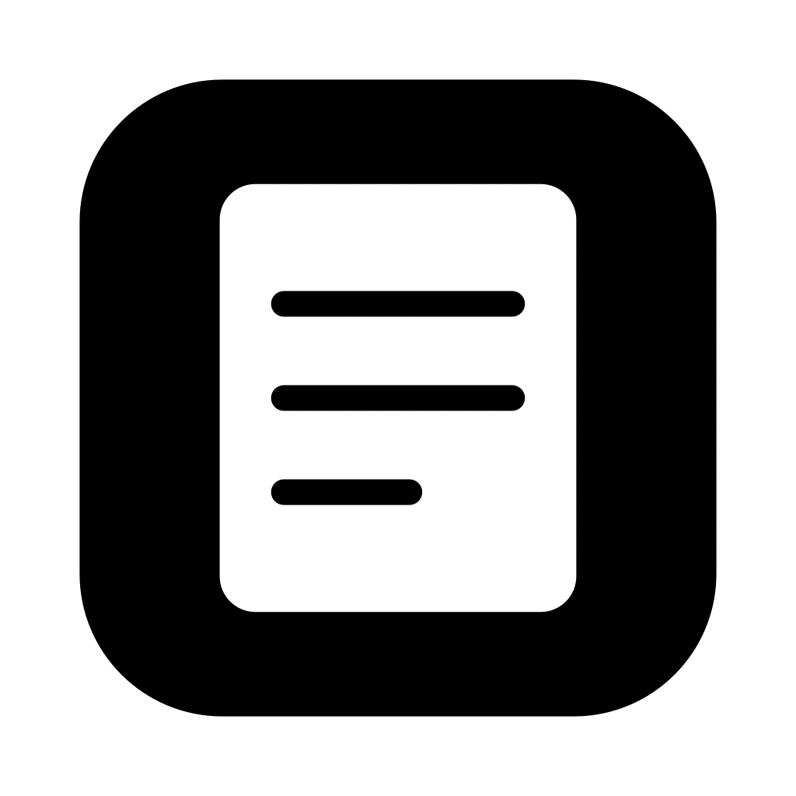
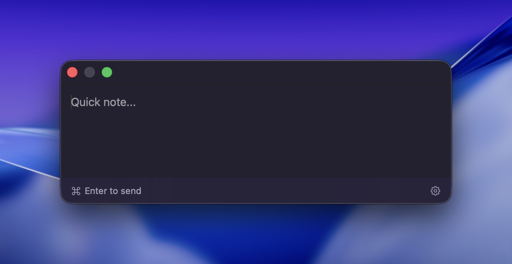
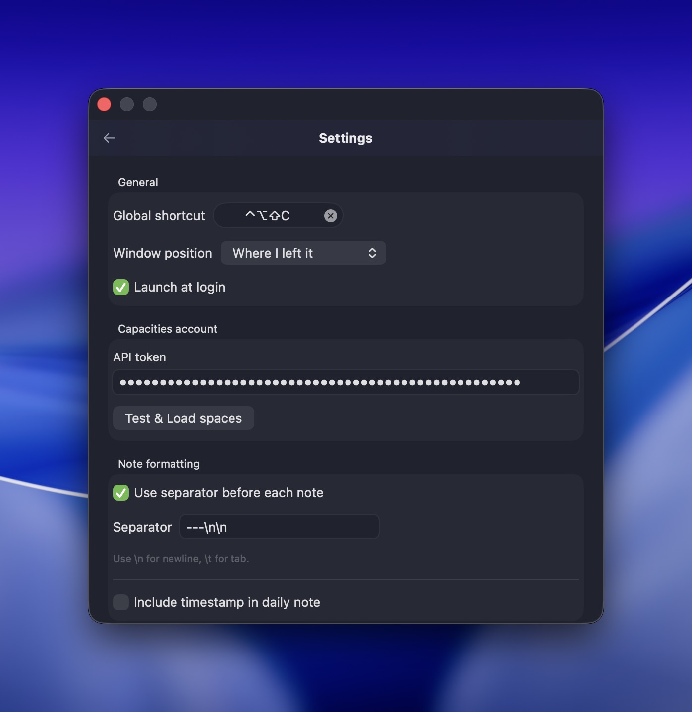

CapNote
A menu-bar dropline for your Capacities daily notes.
Hit ⌘⇧⌥C from anywhere. Type. ⌘↵. Done.
The window

i.
Summon
Anywhere in the OS, hit your shortcut.
⌘⇧⌥C
ii.
Write
Type the note. Multi-line if you want.
note here…
iii.
Send
Lands in today's daily note instantly.
⌘↵
Configuration
Settings live on the back of the same window.
Tap the cog or hit ⌘, and the panel flips. Set the global shortcut, paste your Capacities API token, pick a space, choose how the note is shaped before it gets posted. Hit Esc to flip back.

What it is
Plain text in. Daily note out.
-
Configurable global shortcut
Default is ⌘⇧⌥C. Rebind from settings to whatever frees your fingers up.
-
Optional separator & timestamp
Prefix every note with a custom string (default
---) and toggle Capacities' auto-timestamp. -
Position memory
The window opens where you last left it, or pinned to centered, or anchored to the cursor.
-
Token in the Keychain
Your Capacities API token is stored in the macOS Keychain — never written to disk in plaintext.
-
Auto-updates
Sparkle delivers signed updates in the background. Cmd-Shift-Sigh-of-Relief.
-
No Dock icon, no clutter
Lives in the menu bar as a small note glyph. Quit from the menu when you've had enough.
Five-minute setup
Get it running.
-
Generate an API token in Capacities
Open Capacities → Settings → Capacities API, create a token, copy it.
-
Drag CapNote into
/ApplicationsDownload the zip from the latest release, unzip, drop the
.appinto your Applications folder. -
Open it once
The note glyph appears in your menu bar. No Dock icon — that's intentional.
-
Paste the token, pick a space
From the menu bar, choose Settings…, paste the token in Capacities account, hit Test & Load spaces, then pick the space you want notes to land in.
-
That's it
Press ⌘⇧⌥C from anywhere, write, hit ⌘↵. Open Capacities — your note is at the top of today's daily note.